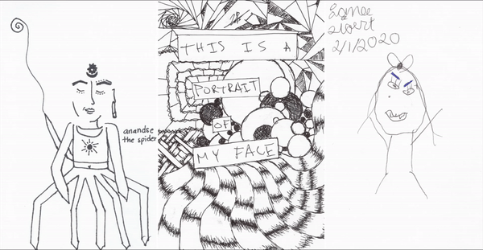

click to go back
this is a portrait of my face

This is a portrait of my face was a collective project of 94 self-portraits
made by everyone who entered our home in Houston, TX starting on 10/8/2019.
The portraits were displayed on a wall near our front entrance for the duration of our lease.
This is a portait of my face, includes portraits from friends, exes, near-strangers, artists, and a former mayor candidate. The project ended abruptly in March 2020, when no new visitors came to our home. The scanned portraits were converted into a book that represents collective vs the individual and self-representation vs surveillance. All the portraits can be viewed here.